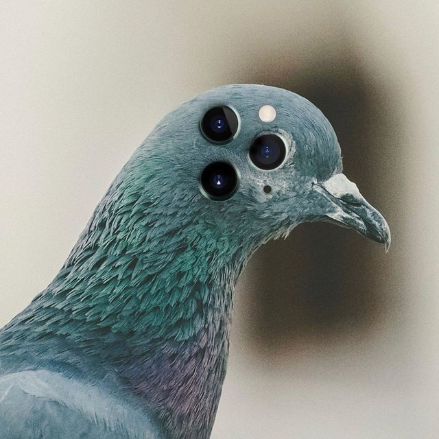

With the growing improvements of modern technology, it's hard to imagine what's next for government surveillance. One popular modern theory is that if Trump is re-elected and builds his wall on the Mexican border, government agents will be armed with ray guns that will shoot down any real Mexican birds from entering our country and mixing with the governments drone birds.

This image shows a representation of the possibilites of technology held by the government towards future projects. It makes you wonder if the government is willing to stop at just birds, or if others will soon be wiped out and replaced as mindless robotic zombies.